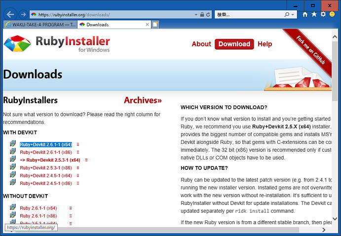
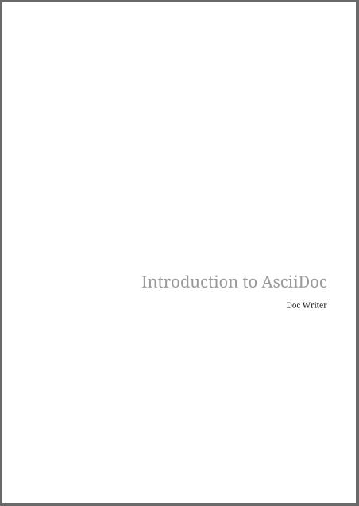
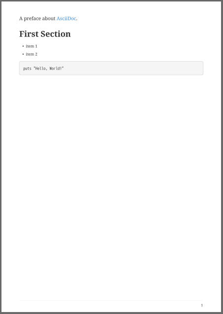

AsciiDoc形式の文書ファイルは、Rubyの「asciidoctor」を利用してHTMLに変換することができます。
Asciidoctorは 高速な テキストプロセッサで AsciiDoc をHTML 5, DocBook 5や他のフォーマットに変換するツールチェインを配布しています. AsciidoctorはRubyで書かれており, RubyGemとしてパッケージされ, RubyGems.org で配布されています. gemはいくつかのLinuxディストリビューション, Fedora, Debian, Ubuntuにも含まれています. Asciidoctorはオープンソース hosted on GitHub で the MIT licenceのもとに配布されます.
また、「asciidoctor-pdf」を利用してPDFに変換することができます。「asciidoctor-pdf」は、前述の「asciidoctor」とPDFを生成する「prawn」を使ってPDFに変換します。
「asciidoctor-pdf」の導入方法を以下に説明します。
ここでは、Windows10 64bit のOSで説明します。Rubyをインストールしますが、Ruby自体を使うことはあまりありませんので、初心者でも大丈夫です。
こちらからインストーラをダウンロードします。ここでは最新の「Ruby+Devkit 2.6.1-1 (x64)」をダウンロードし、インストールしました。

スタート ⇒ Ruby 2.6.1-1-x64 with MSYS2 ⇒ Start Command Prompt with Ruby を起動します。
まず、RubyGemsを最新にします。
Rubyにおけるライブラリは、gemという形式で公開されています。RubyGemsは、ライブラリの作成や公開、インストールを助けるシステムです。
Proxyを通して実行したい場合は、以下のようにset http_proxy・・・を行ってから実行してください。必要の無い場合は省略してください。
set http_proxy=http://プロキシのアドレス:ポート番号
set https_proxy=http://プロキシのアドレス:ポート番号
gem update --system
gem -v次に、gem専用のパッケージ管理システム Bundlerを更新します。
Bundlerは、依存関係のあるライブラリもまとめてインストールしてくれるライブラリです。最近のバージョンでは標準で入っているようです。
gem update bundler
bundle -vBundlerで使用する「Gemfile」を生成します。
bundle initC:/Users/ユーザー名/ に「Gemfile」ファイルが作成されたはずです。以下のように編集します。
# frozen_string_literal: true
source "https://rubygems.org"
git_source(:github) {|repo_name| "https://github.com/#{repo_name}" }
gem "asciidoctor"
gem "asciidoctor-pdf"
gem "asciidoctor-pdf-cjk"
gem "asciidoctor-rouge"
gem "concurrent-ruby"インストールを実行します。
bundle installこれでOKです。
「Start Command Prompt with Ruby」を再起動します。「Untitled-1.adoc」というAsciiDoc形式のファイルを用意します。DOSプロンプトを開き、以下のコマンドを実行するとPDFが作成されます。
cd /d [Untitled-1.adocのあるディレクトリ]
asciidoctor-pdf -r asciidoctor-pdf-cjk Untitled-1.adoc日本語含む文書の場合、-r asciidoctor-pdf-cjkというオプションを付けるのが良いようです。
最近知ったのですが、「asciidoctor-pdf-linewrap-ja」というライブラリもあります。こちらにその記事があります。使いたい場合は、「Gemfile」にgem "asciidoctor-pdf-linewrap-ja"を追加して、bundle installしてください。
「Untitled-1.adoc」の内容。
= Introduction to AsciiDoc
Doc Writer <doc@example.com>
A preface about https://asciidoc.org[AsciiDoc].
== First Section
* item 1
* item 2
[source,ruby]
puts "Hello, World!"出力されたPDFの内容。（ちなみに=の1個は、表紙となります。）


今回は、コマンドを多用しましたが、「Visual Studio CodeからPDFを出力する」のような工夫で、ほとんどRubyを意識せずに使うことができるようになります。
asciidoctor: WARNING: gem '★★★' is not installed. This gem is recommended when registering custom converters.と表示された場合は、「Gemfile」にgem "★★★"を追記して再度、bundle install してください。